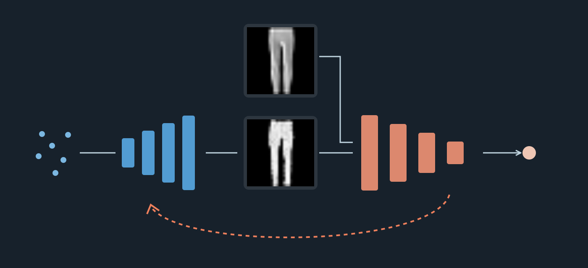
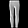
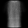
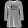
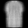
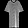

Generative Adversarial Networks
Chapter 12 · Learning an image distribution through a learned judge

An unconditional image generator receives a random vector and returns an image. The difficult question is not how to produce 784 numbers, but what should make those numbers change during learning? A random code has no paired correct garment. In this chapter, a second network learns to distinguish observed images from generated ones, supplying a differentiable criterion for the image-making network.
These notes follow the approved lecture, retain its visual evidence, and expand the reasoning behind its implementation. The four-page PDF is a compact mathematical reference. The controls below replay recorded evidence or manipulate explicitly labeled schematics; they do not train a model in the browser.
We assume familiarity with the VAE sampling path, binary cross-entropy, backpropagation, convolutions, and PyTorch optimizers. Our continuous example is unconditional generation of 28 × 28 grayscale Fashion-MNIST garments. Category labels are not used to train G or D. The same five questions organize the chapter: what data, what model, what loss, which update, and what evaluation?
1 From generating images to learning a judge
1.1 First inspect the evidence
Exercise · 45 seconds. Exactly three of these six images come from the dataset and three are outputs of the previous chapter’s frozen VAE. Predict each source and record one visual clue before opening the solution.






Worked solution: recorded sources
Dataset: A, D, F. VAE outputs: B, C, E. These are the first three held-out examples from each source, interleaved; they were not selected by visual quality or classifier confidence. The generated images are decoder means for three independent prior draws, not Bernoulli pixel samples.
Texture or smoothness may help with these examples. Neither proves an image’s source. The answer comes from provenance, and six guesses are not a measured human benchmark. A generator can change the cues on which a source classifier relies.
The observed images come from Fashion-MNIST (Xiao et al. 2017). The source experiment uses a frozen VAE decoder from the preceding lab. It is not yet GAN training: only a source classifier will learn. Keeping this distinction matters when interpreting its numerical results.
1.2 Why not compare a generated draw with a real image?
In an autoencoder, an observed input \(x\) supplies its own reconstruction target. For unconditional sampling, we instead draw \(z\sim\mathcal N(0,I)\) and compute \(\hat x=G(z)\). The dataset does not specify which observed image should be attached to this particular \(z\).
Change the proposed target below. The output image, latent draw, and decoder stay fixed. The difference heatmap uses a common black-to-orange scale for absolute pixel difference; the scalar reports squared differences averaged over pixels.
The recorded mean squared errors are 0.1410 for the T-shirt, 0.1354 for the boot, and 0.2138 for the bag. Choosing the boot decreases the reported error without improving the generator: only the comparison changed. These are measurements on the original floating-point images; PNGs are rounded for display. The targets are the first held-out example of each predefined class, not hand-selected to force an error ordering.
There is a precise reason that pairing independent random codes with unrelated images is a poor reconstruction objective. Let \(X\) be an image independent of \(Z\), let \(\mu=\mathbb E[X]\), and fix a code \(z\). Expanding the square gives
\[ \mathbb E_X\|G(z)-X\|_2^2 =\|G(z)-\mu\|_2^2+\mathbb E_X\|X-\mu\|_2^2. \]
The cross term vanishes because \(\mathbb E[X-\mu]=0\). The second term is independent of \(G(z)\); the first is minimized at \(G(z)=\mu\). With enough freedom, every code is therefore encouraged toward the same average image. Dividing by 784 to obtain MSE leaves the minimizer unchanged. This argument assumes independent targets and squared error; it does not invalidate paired reconstruction, conditional prediction, or the VAE objective. The three displayed errors illustrate the pairing problem, while the expectation calculation explains its population consequence.
What we want instead is agreement between the distribution of generated images and the distribution of observations. GANs obtain a learning signal for this task by training a discriminator (Goodfellow et al. 2014).
1.3 A classifier can learn a source distinction
The next panel keeps the six images and VAE fixed. The only changing object is a binary classifier with architecture \(784\to128\to64\to1\). Its target is dataset source versus generated source, not T-shirt versus boot. The source label is available automatically because we know how each example was obtained.
At a threshold of 0.5, held-out accuracy changes from 50.0% before training to 76.1%, 96.6%, and 97.2% after 1, 4, and 8 epochs. These accuracies use 1,000 dataset images and 1,000 independent generated images; the six displayed bars are only individual examples. Initially, predicting dataset source for every image gives the 50% balanced baseline. A score near 0.5 at initialization is not learned uncertainty.
The classifier was trained on 6,000 images per source with Adam, learning rate 0.001, batch size 256, for eight epochs. Split seed 41 reserves real validation images outside the VAE’s 12,000-image training subset. Training and validation latent streams use seeds 301 and 302; classifier initialization and minibatch order use 303 and 304. The manifest records image IDs, scores, and the frozen decoder’s checksum.
High accuracy establishes that these two particular sources are distinguishable in this experiment. It does not establish good generation, semantic understanding, calibration, or performance against a different generator. We did not inspect the learned features, so we cannot conclude that the classifier specifically used blur or edges.
1.4 Turn the classifier into a training partner
The next step is to let the image maker change in response to the judge. A generated image travels forward through G and then D. During G’s update, derivatives travel back through D’s input computation into G. The feedback arrow is a gradient path; it is not another image-generation pathway.
This course-made schematic expresses the training arrangement introduced by Goodfellow et al. (2014). The weights of G and D are separate. D learns to identify the two sources, while G learns to make its outputs receive the dataset-source prediction. The objectives and update rules below make that informal description precise.
2 Two networks, two different jobs
2.1 Keep sampling separate from training
A VAE includes an encoder that maps an observed image into parameters of an approximate latent posterior. Its decoder maps a latent draw into an observation model. In the basic unconditional GAN here, G retains the code-to-image role, but the training system changes: real and generated images enter one shared discriminator. We initialize G afresh; this is not a claim that the VAE’s weights are reused.
D is not an encoder replacement. Its output is one source logit per image, not a latent code for reconstruction. The basic GAN does not require an image-to-latent inverse. At generation time the path is simply \(z\to G(z)\); D is unnecessary for producing an unconditional sample.
We use \(\theta\) for G’s parameters and \(\phi\) for D’s. To match the code, distinguish logit from score:
\[ a_\phi(u)=D_\phi(u)\in\mathbb R, \qquad s_\phi(u)=\sigma(a_\phi(u))\in(0,1). \]
The original GAN paper writes \(D(u)\) for the probability-like score. In these notes and the executable examples, D(u) returns the raw logit, and \(s_\phi(u)\) denotes its sigmoid. A logit of zero gives score 0.5; a positive logit favors dataset source once the target convention is established.
The generator induces a distribution \(P_\theta\) through its mapping:
\[ Z\sim P_Z,\quad X_G=G_\theta(Z),\qquad P_\theta(A)=\Pr\{G_\theta(Z)\in A\}. \]
This defines a sampling distribution without requiring a tractable pixel-density formula. It is often called an implicit generative model. The existence of a sampler does not automatically give a convenient likelihood evaluator or inverse map.
2.2 Tensor contracts before objectives
Exercise · 60 seconds. A batch contains four latent vectors of length 16. G produces grayscale 28 × 28 images; D produces one source logit per image. Give both output shapes and identify the modules needed only to generate.
Worked solution and interactive path tracing
\(G(z)\) has shape (4, 1, 28, 28) and \(D(G(z))\) has shape (4, 1). The first axis is the batch; D does not collapse four examples into a single batch judgment. Generation uses G alone. The buttons trace three forward routes through the same modules; they do not change parameters.
The dense generator implements the contract directly. The hidden layers transform each code; the last linear layer emits 784 intensities, sigmoid constrains them to \([0,1]\), and Unflatten restores image axes.
latent_dim = 16
G = nn.Sequential(
nn.Linear(latent_dim, 128), nn.ReLU(),
nn.Linear(128, 256), nn.ReLU(),
nn.Linear(256, 784), nn.Sigmoid(),
nn.Unflatten(1, (1, 28, 28)),
)The displayed texture is the first actual output of an untrained generator, not a successful GAN sample. The module checks verify finite outputs, the intensity range, and correct shapes for batch sizes 1, 4, and 7. A fixed code with fixed weights gives the same output in this deterministic MLP. Changing the code changes the output, but neither property establishes useful generation.
The discriminator flattens each image independently and emits one unbounded scalar:
D = nn.Sequential(
nn.Flatten(),
nn.Linear(784, 256), nn.LeakyReLU(0.2),
nn.Linear(256, 128), nn.LeakyReLU(0.2),
nn.Linear(128, 1),
)Both sources must obey the same image shape and preprocessing contract. For this sigmoid generator, real uint8 pixels are divided by 255. Otherwise D could exploit an intensity-range mismatch instead of useful image differences. G and D own disjoint parameter sets; real and generated batches use the same D instance.
z = torch.randn(4, 16)
fake = G(z) # (4, 1, 28, 28)
real_logits = D(real) # (4, 1)
fake_logits = D(fake) # (4, 1)
display_scores = fake_logits.sigmoid()The sigmoid above is for display. The training loss below accepts raw logits. The source check also confirms that scoring concatenated real/generated batches agrees with separate calls for this MLP. That equality is not universal: batch-dependent or stochastic layers can change it in training mode.
3 Turning competition into learning objectives
3.1 Derive D’s objective from source labels
Suppose D assigns score 0.8 to a real image and 0.2 to a generated one. Both correct-source probabilities are 0.8. With natural logarithms, binary cross-entropy is
\[ \ell(a,y)=-y\log\sigma(a)-(1-y)\log(1-\sigma(a)). \]
The real target is 1 and the generated target is 0. Their costs are \(-\log(0.8)=0.2231\) each. The following panel preserves the lecture’s illustrative arithmetic; these scores are invented for calculation, not measured image predictions.
For independent real and latent minibatches, our discriminator loss is
\[ L_D(\phi;\theta)= -\frac1m\sum_{i=1}^{m}\log s_\phi(x_i) -\frac1n\sum_{j=1}^{n}\log\bigl(1-s_\phi(G_\theta(z_j))\bigr). \]
During this update, \(\theta\) is fixed. We add the two source means. Thus the illustrative pair has \(L_D\approx0.4463\). Averaging the two means would halve this value and its gradients; it would preserve the minimizers but change the update scale. We retain the sum convention in the code, plots, and PDF.
Numerical stability is easiest to see in logit form. Since \(\operatorname{softplus}(a)=\log(1+e^a)\),
\[ \ell(a,y)=\operatorname{softplus}(a)-ya, \qquad \frac{\partial\ell}{\partial a}=\sigma(a)-y. \]
A stable implementation avoids explicitly computing tiny probabilities and then taking their logarithms. PyTorch’s BCEWithLogitsLoss implements the combined operation. Passing sigmoid outputs into it applies the wrong contract. Targets should match the logits’ shape, floating dtype, and device.
3.2 G wants the opposite decision on its outputs
On a generated sample, D’s own target is 0. If G minimized that same cost, it would cooperate in being recognized as generated. Instead, the practical non-saturating G objective is
\[ L_G^{\mathrm{NS}}(\theta;\phi) =-\mathbb E_{Z\sim P_Z}\log s_\phi(G_\theta(Z)). \]
Here \(\phi\) is fixed and \(\theta\) changes. Target 1 expresses the prediction G wants to obtain; it does not change the image’s provenance or D’s target on its own turn. There is no real-image term because it has no dependence on G’s parameters.
At score 0.2, D’s fake-image cost is 0.223 and G’s is 1.609. At score 0.8, these values exchange places. At 0.5 both equal \(\log2\approx0.693\). Equal scalar costs do not certify successful generation. The slider changes a hypothetical score, not an image or model.
The original minimax formulation uses
\[ \min_\theta\max_\phi V(\phi,\theta),\qquad V=\mathbb E_{P_{\mathrm{data}}}\log s_\phi(X) +\mathbb E_{P_Z}\log(1-s_\phi(G_\theta(Z))). \]
D minimizes \(-V\). The minimax generator minimizes its second term. The non-saturating objective above is an alternative with different gradients, not the negative of the whole discriminator loss (Goodfellow et al. 2014, sec. 3).
3.3 Why non-saturating feedback helps at a rejected sample
Write \(a=D_\phi(G_\theta(z))\) and \(p=\sigma(a)\). The sigmoid derivative is \(dp/da=p(1-p)\). Applying the chain rule gives
\[ \frac{\partial\log(1-p)}{\partial a}=-p, \qquad \frac{\partial(-\log p)}{\partial a}=p-1. \]
Both are negative, so descent locally favors raising the generated sample’s logit. At \(p=0.01\), the magnitudes are 0.01 and 0.99: a 99-fold difference at the logit. Non-saturating is not larger everywhere; inspect \(p=0.8\) as well.
The curves are analytic; the selected points were independently checked with float64 PyTorch autograd. They are not training curves. The full sample gradient is
\[ \nabla_\theta\ell_G =J_{G_\theta}(z)^\top\, \nabla_x a_\phi(x)\big|_{x=G_\theta(z)}\, \frac{\partial\ell_G}{\partial a}. \]
Improving the last scalar factor cannot guarantee a useful discriminator input direction, a well-conditioned generator Jacobian, or convergence. Across a minibatch, gradients may also cancel. The 99-fold comparison is therefore not a universal ratio between optimizer updates or training speeds.
3.4 What would an ideal discriminator tell us?
This derivation explains the distributional aim behind the practical mechanism. Suppose the data and generated distributions have densities \(p_d\) and \(p_g\) relative to a common dominating measure. Hold G fixed and allow the score function \(s\) arbitrary capacity. At each \(x\), maximize
\[ f(s)=p_d(x)\log s+p_g(x)\log(1-s). \]
Where both densities are positive, stationarity requires
\[ \frac{p_d(x)}{s}-\frac{p_g(x)}{1-s}=0 \quad\Longrightarrow\quad s^*(x)=\frac{p_d(x)}{p_d(x)+p_g(x)}. \]
The second derivative is negative, so this is the pointwise maximum. If only one density is positive, the optimum is the corresponding boundary score 1 or 0. Where both vanish, the value of \(s\) is irrelevant to the expectations. A finite sigmoid logit can approach but not attain the boundary scores exactly.
The formula shows why D’s score is relative to the current generated distribution. In a region where generated images are scarce compared with data, the ideal score is high. If \(p_g=p_d\), the optimal score is 1/2 almost everywhere under their common distribution. But the converse observation—our learned network emits 1/2—does not establish equality: an untrained or underfit network may also do that.
Let \(m=(p_d+p_g)/2\). Substituting the optimal score into the minimax value gives
\[ \begin{aligned} V(s^*,G) &=\int p_d\log\frac{p_d}{p_d+p_g} +\int p_g\log\frac{p_g}{p_d+p_g}\\ &=-\log4+D_{\mathrm{KL}}(p_d\|m)+D_{\mathrm{KL}}(p_g\|m)\\ &=-\log4+2\operatorname{JS}(p_d\|p_g). \end{aligned} \]
Thus the idealized minimax value is minimized when the distributions match. This is an analysis of an unrestricted, optimal discriminator (Goodfellow et al. 2014, sec. 4); it is not a statement that finite alternating Adam steps exactly minimize Jensen–Shannon divergence. Our implementation also uses the non-saturating G objective, whose finite-step gradient is different. These qualifications prevent a mathematical equilibrium result from becoming an unsupported convergence claim.
3.5 Implement the three targets
Exercise · 60 seconds. Both logit tensors have shape (4, 1). Fill the three target arguments with matching zeros or ones. Use the non-saturating G loss.
bce = nn.BCEWithLogitsLoss()
loss_D = bce(real_logits, ...) + bce(fake_logits, ...)
loss_G = bce(fake_logits, ...)Worked solution: real 1, generated 0, generator objective 1
loss_D = bce(real_logits, torch.ones_like(real_logits))
loss_D += bce(fake_logits, torch.zeros_like(fake_logits))
loss_G = bce(fake_logits, torch.ones_like(fake_logits))On section 2’s recorded untrained logits, these produce \(L_D=1.4044\) and \(L_G=0.7014\). This is a loss-arithmetic check, not a training loop. In training, G’s objective needs a fresh forward through D after D’s update. The next section supplies that ordering.
4 Training one network at a time
4.1 Separate gradient paths from parameter ownership
There are two distinct decisions: which derivatives must be available, and which parameters the optimizer may change. During D’s turn, fake images are fixed inputs. During G’s turn, D’s weights are fixed, but its derivative with respect to the image is essential.
The schematic switches between the two turns. The table below records the separate implementation controls.
| Control | What it changes | What it does not do |
|---|---|---|
fake.detach() |
Breaks the graph connection from fake to G | Does not freeze D |
torch.no_grad() |
Suppresses graph recording in its block | Does not put a model in evaluation mode |
D.requires_grad_(False) |
Disables new gradient accumulation for D’s parameters | Does not remove derivatives with respect to a differentiable input |
optimizer.step() |
Updates that optimizer’s parameter collection and state | Does not infer which model should own a loss |
model.eval() |
Changes behavior of mode-dependent layers | Does not disable autograd |
Calling zero_grad prevents unwanted accumulation into gradient buffers. It does not change weights, clear an optimizer’s momentum history, or disconnect a graph. A parameter with no newly computed gradient is different from one with a measured numerical gradient of zero.
4.2 D’s turn: learn from fixed generated examples
The lecture’s MLP update is reproduced directly from its executable source. opt_D owns only D’s parameters; the surrounding program supplies bce and the independent optimizers.
D.requires_grad_(True)
opt_D.zero_grad(set_to_none=True)
fake = G(z)
real_logits = D(real)
fake_logits = D(fake.detach())
loss_D = (
bce(real_logits, torch.ones_like(real_logits))
+ bce(fake_logits, torch.zeros_like(fake_logits))
)
loss_D.backward()
opt_D.step()The displayed code computes G(z) with tracking and detaches it before D. Generating fake images under no_grad is also appropriate here, because this turn does not need G’s derivatives, and avoids building that unused G graph. In either version, the subsequent calls to D must be tracked so its parameters can receive gradients.
The real and fake losses are source means added together. backward() populates D’s gradients, then opt_D.step() changes D. G’s image-making parameters stay fixed. This is one classifier update against the current generated source, not optimization of D to its global optimum.
4.3 G’s turn: a fixed judge with a differentiable input
D.requires_grad_(False)
opt_G.zero_grad(set_to_none=True)
fake = G(z)
fake_logits = D(fake)
loss_G = bce(
fake_logits, torch.ones_like(fake_logits)
)
loss_G.backward()
opt_G.step()
D.requires_grad_(True)Freezing D’s parameters removes the need to compute their gradients. It still permits autograd to differentiate D’s output with respect to G(z), because that image depends on trainable G parameters. The generator target is one, so gradient descent encourages D to favor dataset source for the generated image. After the step, D’s parameter flags are restored for its next turn.
Compute a fresh forward through the updated D. Reusing logits saved before opt_D.step() asks the wrong function to judge G and may also reference a freed graph or tensors modified in-place. Keeping a graph with retain_graph=True is not a substitute for correct update ownership and ordering. Reusing the same noise values on both turns is allowed; reusing a stale computation is the problem.
The section 4 audit used one real batch, seed 1204, and independent Adam optimizers at 0.001. Each MLP has six parameter tensors:
| Turn | G tensors changed | D tensors changed | G tensors with gradients | D tensors with gradients |
|---|---|---|---|---|
| D update | 0 / 6 | 6 / 6 | 0 / 6 | 6 / 6 |
| G update | 6 / 6 | 0 / 6 | 6 / 6 | 0 / 6 |
These are measured ownership checks, not claims about image quality. See the audit and broken-path result. When running your own diagnostic, clear both models’ old gradients first; stale buffers can otherwise mislead you about which turn produced them.
4.4 Debug a disconnected generator
Exercise · 60 seconds. The intended operation is a G update with D’s weights fixed. Explain why this code fails, then repair it without allowing D’s optimizer to step.
fake = G(z)
with torch.no_grad():
fake_logits = D(fake)
loss_G = bce(fake_logits, torch.ones_like(fake_logits))
loss_G.backward()Worked solution: freeze parameters, preserve the input derivative
no_grad prevents recording the D computation. Consequently fake_logits has no path back to fake, and the loss has requires_grad=False in this isolated example. Backward raises an error; no G parameter gradients are produced. The recorded probe confirms both observations.
D.requires_grad_(False)
opt_G.zero_grad(set_to_none=True)
fake_logits = D(G(z))
loss_G = bce(fake_logits, torch.ones_like(fake_logits))
loss_G.backward()
opt_G.step()
D.requires_grad_(True)Only G’s optimizer steps, but derivatives pass through the fixed D function. Transfer: putting detach() on G(z) would break the same necessary connection. Merely omitting opt_D.step() can leave G’s path intact, but may compute and accumulate unnecessary D parameter gradients unless they are managed.
4.5 Why alternating optimization is not ordinary loss descent
One optimizer sees a classifier whose negative examples move; the other sees a loss function supplied by a moving classifier. There is no requirement that both losses decrease together. Even with correct signs and gradient paths, the game can rotate or oscillate rather than settle like a well-conditioned single-objective problem. The original minimax formulation allows multiple D updates per G update; our small run uses one of each.
Optimizer states must remain separate. Learning rates, model capacities, and the update ratio affect the dynamics, but no single choice guarantees balance. Before attributing failure to adversarial instability, verify tensor ranges, targets, gradient paths, optimizer ownership, and finite numerical values. These are testable contracts already established above.
5 Building an image GAN with convolutions
5.1 Preserve the objectives; give the mappings spatial structure
The dense pair satisfies the interfaces, but it treats the flattened image as a vector. The convolutional pair introduces shared local operations over spatial feature maps. G progressively increases resolution; D progressively decreases it. The latent prior, source targets, and alternating-update logic stay the same.
The following paired view makes both spatial paths visible. Feature-map face size represents spatial extent; channel counts are separate labels. The volumes are schematic geometry, not measured activations. G and D do not share weights and are not algebraic inverses.
This is a small DCGAN-inspired adaptation, not a reproduction of the original architecture or its experiments (Radford et al. 2015). In particular, it produces 28 × 28 grayscale images and puts BatchNorm only in G. The original paper is useful for its empirical architectural design choices, not as a guarantee that any convolutional GAN will train reliably.
5.2 Transposed convolution: place, weight, and add
To grow an image, a learned operation must distribute coarse features over a finer spatial grid. The lecture uses a one-dimensional example first: input \([1,2]\), kernel \([1,2,1]\), stride 2, and no padding. The first input places \([1,2,1]\) at positions 0–2; the second places \([2,4,2]\) at positions 2–4. Contributions add where they overlap:
\[ [1,2,1,0,0]+[0,0,2,4,2]=[1,2,3,4,2]. \]
The toy is exactly checked with ConvTranspose1d, not just a drawing. In two dimensions, learned kernels spread each input location into an output patch, contributions sum, and channel mixing combines learned features. A transposed convolution is associated with the transpose of a convolution’s linear operator, not its matrix inverse. The informal word “deconvolution” must not suggest guaranteed reconstruction of an earlier input.
For one spatial axis, with input length \(H\), kernel \(k\), stride \(s\), padding \(p\), dilation \(d\), and output padding \(o\), the output contracts are
\[ H_{\mathrm{conv}}=\left\lfloor\frac{H+2p-d(k-1)-1}{s}+1\right\rfloor, \qquad H_{\mathrm{trans}}=(H-1)s-2p+d(k-1)+o+1. \]
In our upsampling layers, \(d=1,o=0,k=4,s=2,p=1\). Starting from 7 gives \((7-1)2-2+3+1=14\); starting from 14 gives 28. The initial \(1\to7\) stage uses \(k=7,s=1,p=0\). output_padding resolves output-shape ambiguity; it is not an instruction to append a literal border of zeros. Consult the official operator contract when changing dimensions.
5.3 Trace every layer into executable code
The exact G used for the recorded training run is:
G = nn.Sequential(
nn.ConvTranspose2d(16, 64, 7, 1, 0, bias=False),
nn.BatchNorm2d(64), nn.ReLU(),
nn.ConvTranspose2d(64, 32, 4, 2, 1, bias=False),
nn.BatchNorm2d(32), nn.ReLU(),
nn.ConvTranspose2d(32, 1, 4, 2, 1), nn.Tanh(),
)Its feature shapes, excluding batch, are \(16\times1\times1\to64\times7\times7\to32\times14\times14\to1\times28\times28\). Hidden BatchNorm/ReLU stages operate at the first two spatial resolutions. Bias is disabled in convolutions immediately followed by BatchNorm.
The exact D is:
D = nn.Sequential(
nn.Conv2d(1, 32, 4, 2, 1), nn.LeakyReLU(0.2),
nn.Conv2d(32, 64, 4, 2, 1), nn.LeakyReLU(0.2),
nn.Conv2d(64, 1, 7, 1, 0),
nn.Flatten(1),
)Its path is \(1\times28\times28\to32\times14\times14\to64\times7\times7\to1\times1\times1\), then flattening to (B, 1). The final convolution uses a 7 × 7 kernel to cover the remaining feature map. D still emits a raw logit; there is no final sigmoid in the module.
Range contract. Tanh changes G’s output range to \([-1,1]\). Real pixels become pixels.float() / 127.5 - 1. Convert generated values back with (fake + 1) / 2 for display. This change affects image preprocessing, not the discriminator’s source-label convention.
State contract. This G has BatchNorm running statistics, which are buffers rather than optimizer parameters. In the recorded run, G is in evaluation mode on D’s turn and during snapshots, and in training mode on G’s turn. G’s running statistics therefore update only on its own turn. D has no BatchNorm. This is a deliberate local policy, not the unique correct GAN convention. no_grad alone would not prevent training-mode BatchNorm from updating its buffers; requires_grad_(False) alone would not either.
The complete training source combines these modes with the earlier gradient rules. The tested forward contracts include batch sizes 1, 4, and 128 in evaluation mode. A correct shape or finite output is necessary but does not validate a learned distribution.
5.4 Observe a documented training trajectory
Keep all six latent vectors fixed and advance through the checkpoints. Both learned parameters and BatchNorm state can change; the input draws and their ordering do not. A fixed draw need not preserve garment identity throughout training.
These are the first six standard-normal draws from seed 1206, with no ranking or removal. The local CPU run used 12,000 training images, seed 1205 for initialization, seed 1207 for minibatch order, and 60 epochs. With batch size 128 and the final batch of 96 retained, there are 94 alternating iterations per epoch and 5,640 in total. Each iteration performs one D update and one non-saturating G update. Both Adam optimizers use learning rate 0.0002 and betas (0.5, 0.999).
Convolution weights were initialized from \(\mathcal N(0,0.02^2)\); BatchNorm scale from \(\mathcal N(1,0.02^2)\); biases start at zero. The initial 20-epoch run was extended to 60 after inspecting rough outputs. Earlier snapshots and all six draws were retained, so the reporting does not hide that decision. The run record stores all losses, seeds, checks, and the final checkpoint checksum.
Foreground/background structure and garment-like silhouettes emerge in this run, with visible imperfections. The evidence does not establish that convolutions outperform a trained MLP: no comparable trained MLP baseline was run. Nor do six fixed codes measure coverage. They provide continuity for observing how one model changes, motivating the fresh-sample checks next.
6 Judging samples, diversity, and failure
6.1 Individual plausibility and distributional variety
A generator can produce a plausible image while missing much of the data distribution. Conversely, a visibly varied collection may still contain poor images. We therefore inspect fresh, uncurated batches, alongside held-out real examples.
The actual generated galleries contain 36 fresh outputs from seed 1208, distinct from the fixed training-viewer draws. The three batches are consecutive groups of 12, with no quality-based selection. The real reference contains the first 36 held-out examples of the established split, unseen during G/D training; it is not a class-balanced selection.
The repetition button deliberately duplicates the first generated image of the selected batch twelve times. This is a constructed control, not observed collapse in the trained run. It shows what looking at just one attractive image can miss. Mode collapse means that many codes map to a narrow set of outputs; it need not produce pixel-identical copies. Small variations around a few templates can still omit important possibilities.
Thirty-six images cannot establish correct category frequencies, complete support coverage, or absence of collapse. The intended application determines which failures matter, and different evaluation questions cannot be reduced to one visual impression (Theis et al. 2016). For this course task, keep failed silhouettes visible and report the selection rule along with the gallery.
6.2 Read the loss history together with images
The orange curve is D’s sum of source means; the blue curve is G’s non-saturating mean. All 60 recorded epochs use one shared vertical axis, without smoothing. The controls compare the same two latent draws at epochs 5, 20, and 60. These displayed images use G in evaluation mode; the curve values are losses collected during each network’s own training turns, not losses recomputed on those two images.
| Epoch | Mean D loss | Mean G loss |
|---|---|---|
| 5 | 1.342 | 0.779 |
| 20 | 1.311 | 0.764 |
| 60 | 1.371 | 0.717 |
Each epoch value is an unweighted mean over minibatch loss values, so the smaller final minibatch has the same weight as a full one. This is a documented monitoring convention, not an exact mean over every training example. D and G losses are not directly comparable quality scores: their targets and reductions differ, and both networks change the problem faced by the other.
Under ideal distribution matching with an optimal score of 1/2, our reduction gives \(L_D=2\log2\approx1.386\) and \(L_G^{\mathrm{NS}}=\log2\approx0.693\). These are not acceptance thresholds. An untrained weak judge can yield similar numbers for bad images. Conversely, transient oscillation alone does not prove implementation failure. Inspect fresh batches, fixed-code history, finite values, and gradient/update correctness together.
6.3 Nearest training images: a limited copying check
The next comparison uses the first three fresh outputs, without selecting queries for apparent novelty or similarity. For each query \(\hat x_i\), it searches all 12,000 training images:
\[ j^*(i)=\arg\min_{1\le j\le12000} \frac1{784}\|\hat x_i-x_j\|_2^2. \]
The search uses original floating-point generated tensors converted to \([0,1]\), not rounded PNGs. Recorded minimum MSEs are 0.0311515, 0.0299349, and 0.0745949. The dataset IDs of the nearest training images are 52488, 46604, and 2584. The evaluation record stores these indices, exact distances, and the generator checkpoint checksum.
No exact floating-point match was found for these three queries. That is a narrow observation, not proof against memorization. Pixel MSE is sensitive to alignment: a small translation can make related images appear distant, while legitimately similar garments can be close. Suspicious similarity merits inspection, but similarity alone does not establish copying and dissimilarity alone does not establish novelty. A broader audit would use more uncurated queries and a similarity notion suited to the task, comparing relationships with both training and held-out examples.
The three checks answer different questions. Fresh batches expose visible variety and failures. Fixed-code snapshots expose changes over training. Nearest-training comparisons expose suspicious similarities. None replaces the others, and a small course experiment supports more modest claims than a benchmark study.
6.4 Assemble the complete system
Exercise · 90 seconds. You have unlabeled 28 × 28 grayscale garment images and a held-out split. Specify a coherent GAN through data, hypothesis, loss, optimization, and evaluation. Also state the path used to generate an image after training.
Worked solution: one coherent pipeline
| Part | Concrete specification |
|---|---|
| Data | Scale training images to \([-1,1]\) to match Tanh; retain a held-out reference. |
| Hypothesis | Draw \(z\sim\mathcal N(0,I_{16})\); convolutional G maps it to an image; convolutional D maps an image to one logit. |
| Loss | D: real target 1 plus generated target 0, using a sum of source means. G: non-saturating target 1 through D. |
| Optimization | On D’s turn disconnect G; on G’s turn keep D’s input derivative while freezing its weights. Use independent optimizer states, fresh forwards, and the documented BatchNorm policy. |
| Evaluation | Inspect fresh uncurated batches, fixed-code checkpoint history, training losses, and nearest training images with their limitations. |
After training, only G is needed:
G.eval()
with torch.no_grad():
z = torch.randn(12, 16, 1, 1, device=next(G.parameters()).device)
images = (G(z) + 1) / 2This is unconditional sampling; no requested category or source image is supplied. Evaluation mode fixes the running-statistics behavior, while no_grad avoids constructing an unnecessary backward graph.
The comparison with earlier chapters is now precise. An autoencoder learns a reconstruction mapping through a bottleneck. A VAE adds a probabilistic latent model, approximate inference, and an evidence-bound training objective. This GAN learns a direct sampler using a discriminator as a training criterion. These are different contracts, not a universal ranking of model quality. The course ends by combining model design, objective choice, correct optimization, and evidence-based evaluation in the student projects.
Annotated reading and reproducibility
- Goodfellow et al., Generative Adversarial Nets. Read §3 alongside our loss and update sections; distinguish the paper’s probability-valued D from our logit-valued module. Then read §4 for the optimal-discriminator argument and its assumptions. Do not interpret that idealized analysis as a guarantee for our finite Adam run.
- Radford, Metz, and Chintala, DCGAN. Read the architecture guidelines and compare each with our small grayscale adaptation. Pay particular attention to spatial upsampling, strided discrimination, normalization, and output activation. The paper’s larger experiments are separate from our recorded run.
- Theis, van den Oord, and Bethge, A Note on the Evaluation of Generative Models. Use this to examine why attractive samples, distributional coverage, and likelihood-oriented criteria answer different questions. Relate the intended application to the evidence you would collect.
- PyTorch: BCEWithLogitsLoss, ConvTranspose2d, and autograd mechanics. These are implementation references for logits, output dimensions, gradient modes, and freezing parameter gradients. Verify the contract before changing the architecture or loop.
- Fashion-MNIST source and dataset description. Use the original source for the image format and dataset provenance. The course split is an explicit subset of its training partition, not a claim to use the official test split for every experiment.
The lecture asset README links the generation scripts and protocols. The dense module source, update audit builder, convolutional run, and evaluation builder preserve the executable evidence. Reproduction needs the stated Python dependencies and cached dataset; rendering these notes does not train. Exact floating-point results can depend on software and hardware, so the saved records identify the measured run.
The notes’ visual panels are extracted from the approved rendered lecture by a local asset builder. They retain the same images, controls, diagrams, and numerical records, while the surrounding text supplies interpretation. All scientific limitations travel with the evidence: the frozen-VAE judge is not a GAN, the dense pair is untrained, the 60-epoch convolutional run is a single small experiment, and the repeated gallery is constructed.